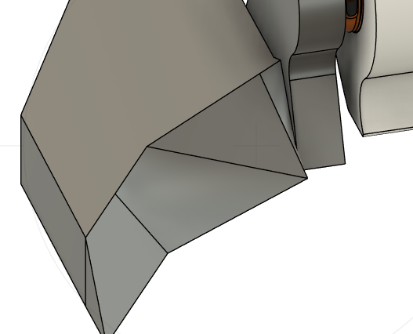
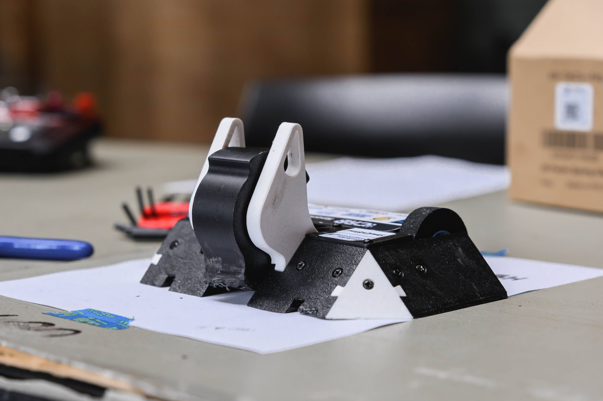
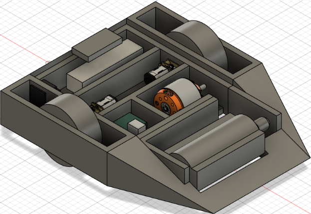
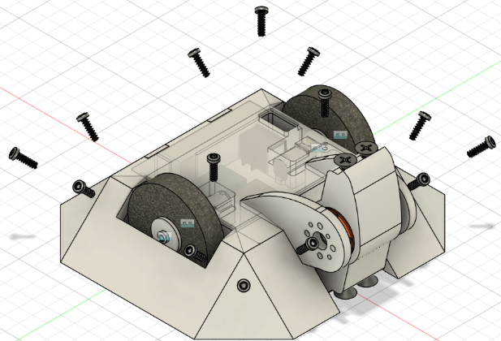
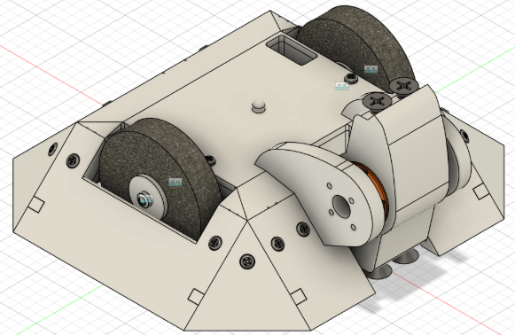

Plastic Antweights
Combat Robotics at Berkeley
Plastic antweights (1 lb) restrict all structural and weapon components to standard 3D-printed plastic, with exceptions only for electronics, fasteners, and functional inserts. The constraint shifts the engineering focus to print-oriented design and geometry rather than raw material selection, and the low cost of entry makes the class well-suited for rapid iteration.
Overview
Skadoosh is the direct successor to Eggsterminator, built around an asymmetrical vertical spinner. Versions 1 and 2 share the same electronics and specs, differing in geometry and combat outcomes. Version 3 is a larger redesign, currently in progress, with updated electronics and components.
- Budget $100 (Ver 1-2)
- Weapon 88.62 g asymmetric vertical spinner; 124 J after 2 s spin-up
- Weapon Motor D2826 1400KV 2-3S, brushless direct-drive
- Drive Motors N20 800 RPM, brushed direct-drive 2WD
- Priorities Modularity · survivability · repairability
Version 1 (Winter, 2026)
Fought at: Winter Wreckage (Winter 2026)

Building on Eggsterminator's proven foundation, my teammate Nathan Chan and I retained what had worked — the modular angled armor — while redesigning the weapon system to allow greater bite. The armor's modularity was meant to allow quick swaps between matches, though V1 never got the chance to put that to use in practice — that payoff came later, at Berkeley Bot Bash with V2. Nathan led the weapon design and named the robot. We also designed invertibility in deliberately this time rather than as an afterthought. The experimental choice was a concave front wedge, inspired by Dorito — a 1 lb control bot we had mentored whose crescent shape outperformed expectations; we adapted the geometry for Skadoosh while aiming to address its durability issues.
A notable result: Skadoosh defeated the robot that had won Berkeley Bot Bash the previous semester, making it the top-ranked 1 lb in the club at that point. Structurally, the armor panels survived every hit without failing, but the frame cracked consistently — too much material had been allocated to armor at the expense of the chassis. The concave front geometry never produced a clear control advantage and gave opponents a reliable corner to strike. Weapon rails were insufficiently secured and frequently broke alongside the frame, leaving the robot unable to deal damage for stretches of the event. Drive held up adequately; I was not driving.
Version 2 (Spring, 2026)
Fought at: Carnage at the Cube (Spring 2026), Berkeley Bot Bash (Spring 2026)

V2 returned to conventional geometry by removing the concave front, requiring a full redesign of both the armor panels and the frame. The weapon disk and uprights were largely carried over, though the uprights were made lighter and refined to interface more cleanly with the new frame. This version was also more of a personal project: I handled the full build myself, including soldering the wiring harness from scratch, and drove it as well.
V2 finished 3–4 across Carnage at the Cube and Berkeley Bot Bash, with two additional informal wins from grudge matches. The weapon and armor held up well. Drive was the main problem: the robot was often difficult to control, likely because the N20 brushed motors couldn't produce enough force to overcome friction from the dragging front wedge — a problem less apparent in other 2WD robots running more powerful brushless drive. A persistent weapon anomaly appeared at both events: the disk would only begin spinning up at half throttle. Testing the controller on other robots showed no issues, pointing to a quirk with the weapon ESC rather than the wiring.
Lessons (Carnage at the Cube):
- Robot was uncontrollable at times — N20 motors likely insufficient to overcome front wedge drag; brushless drive would help
- Losses came from inverting with the weapon motor unable to self-right; need torque calculations, or ensure the robot always lands with wheels contacting the ground
- Back plate cracked — needs a separate panel with layer lines perpendicular to impact; also an issue in V1, though getting hit in the back is arguably a driving/positioning issue and may not be high priority to fix
- Weapon motor magnet shattered internally; battle harden or source a more robust motor
- Fork mount fell off mid-match from vibration; needs a stronger scheme or top-plate edge screws moved further inward
- A solder joint disconnected during a match; ensure all connections are solid before the event
- Not much damage was actually sustained — armor thickness may still be reducible further
- Need more driving practice overall
Lessons (Berkeley Bot Bash):
- Anti-control configuration caused one wheel to lose ground contact — robot is too front-heavy in that config, shifting the center of mass past the contact point; the concept is still worth pursuing with a geometry fix
- Weapon motor shaft needs more engagement in the opposite rail bearing; hard impacts caused it to briefly pull free and jam twice, losing all weapon effectiveness
- An armor panel broke off after forgetting to install all fasteners before the match
Version 3 — In Progress
V3 is a ground-up redesign driven by V2's drive and weapon-mount failures. The drivetrain switches to brushless tangent drive — faster and more powerful than the N20 brushed motors, which could not overcome front wedge friction. The extra speed should also help close distance quickly against opponents where that matters most, like "meltybrains". Tangent drive requires a wider, shorter footprint and may run fast enough that top speed needs to be dialed back in the controller. Wheel fabrication (possibly cast Vytaflex or Lego-compatible) and the exact interference needed are still being worked out. A 4S battery replaces the current 2S for higher tip speed and stronger drive; the weapon proved effective on 2S but more tip speed helps in weapon-on-weapon exchanges. The weapon motor will be replaced with a Repeat Robotics unit, purpose-built for combat and commonly used in the class. Electronics will use a Catalyst ESC (4S-compatible with integrated receiver, roughly equivalent to a 45A ESC) paired with a 35A weapon ESC — the two are supposedly compatible together, but that still needs to be confirmed. The weapon disk will be made thinner to allow more shaft to seat deeply into the opposite rail's bearing, addressing the repeated pull-out failures in V2.
Additional changes under consideration: steeper armor plate angles (45° to 60°), trimming armor height to match the frame to recover weight, and integrating the fork mounts into the armor panels to isolate them from frame damage — though that could mean fielding a lot of forks, so it's worth checking whether that's within the rules, with a fallback plan if not.
V3 is being built over the summer, leaving time to get in more driving practice ahead of the next competition. Out of respect for an existing bot in the same weight class, this robot's name will be slightly changed to "Skadooosh", where an extra "o" is for the robot becoming wider.
Overview
Eggsterminator is a 1 lb plastic antweight built around survivability. Its direct-drive symmetrical vertical spinner, angled exterior, and modular armor panels — oriented so layer lines resist impact loads — let the robot absorb hits and swap damaged sections between matches rather than reprinting whole chassis spares. Most components were standardized by the club's leadership to create a level playing field for the internal competition. An adjusted ruleset allowed 20 g of metal impactors; while other teams used screw shaft tips, smaller screws, or other less optimal choices, we chose large flathead screw heads for maximum impact area — a decision that proved highly destructive.
- Budget $100
- Weapon 57 g symmetrical spinner with steel screw impactors; 99 J after 2 s spin-up
- Weapon Motor D2826 1400KV 2-3S, direct drive
- Drive Motors N20 800 RPM, direct-drive 2WD
- Electronics N20 800 RPM, direct-drive 2WD
- Priorities Modularity · survivability · subsystem integration
Design Process

Starting without referencing existing bots, I evaluated common weapon types and settled on a vertical spinner for its combination of offensive power and mechanical simplicity. Two-wheel drive was chosen for ease of implementation. The first rough CAD was presented at the student organization's initial design review, where feedback shaped the next iteration.

The redesign introduced two defining ideas: modular armor panels and all-around angled geometry. Most robots angle only the front wedge; paneling every exterior surface provides consistent weapon deflection regardless of approach angle. Each panel was also oriented so its layer lines run perpendicular to expected impact loads, preventing delamination under hits. Two layout variants were modeled; the selected version is shown on the left.

Refinements from DR2: thicker weapon rails, fully modeled fasteners, and improved rail mounting geometry. The back plate was flattened to recover weight, and all holes and mating features were toleranced for reliable fits before sending to print.
Outcomes & Performance
Result: 2nd place; longest winning streak of the competition, "Most Destructive" award.
Loss: Flipped by an opponent and unable to self-right — the robot could drive inverted but the weapon became inoperable, leaving no path to scoring, resulting in a loss by judges decision.
Improvisation: We received the wrong screw lengths for the metal impactors and had to manually saw them to the correct length — this did not affect weapon stability during spin. Drive held up better than expected thanks to a last-minute assist from club leads, who applied a liquid latex adhesive to the wheel edges for traction. We had also had to fabricate our own wheels from yoga mat foam with 3D-printed hubs, rather than the foam wheels we had originally intended.
Lessons:
- Invertibility needs a better plan — the robot must be functional weapon-first when upside down, not just able to drive
- Weapon must remain operational when inverted
- Shorter wire routing would help — squishing the top plate closed to seal the robot was a recurring issue
- The angled geometry was highly effective; no armor needed replacing throughout the event
- Angled surfaces cut both ways when flipped — they can help the robot right itself, but only at the cost of taking more hits in the process
Next steps: Carry both lessons into a new 1 lb robot design.